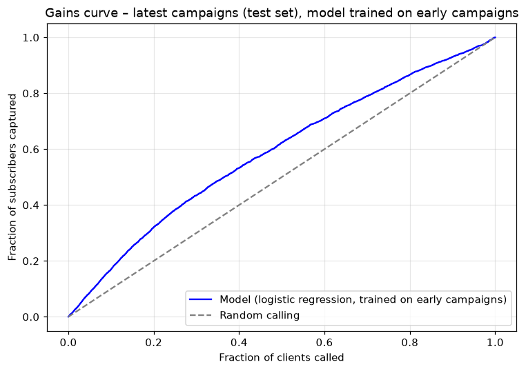
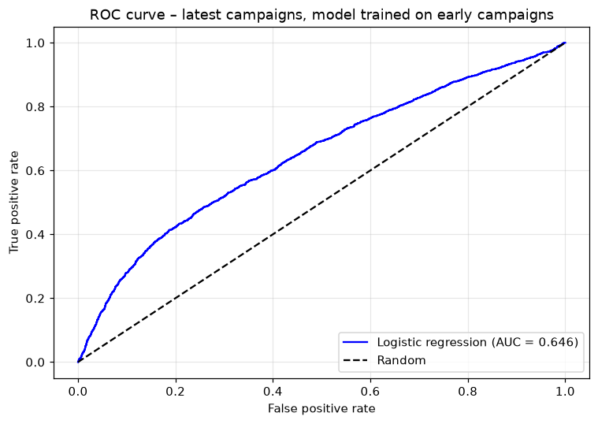
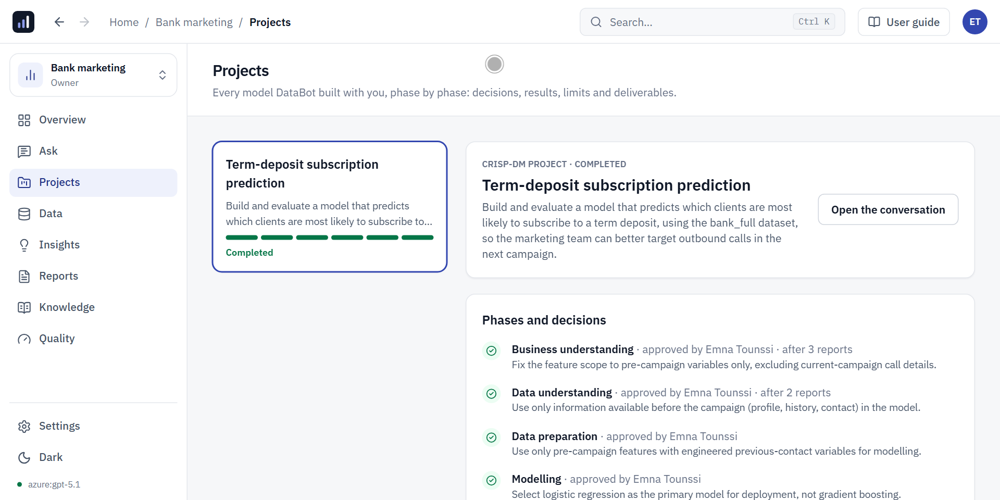

In 90 seconds
Excerpts of the two full demos shown below, in real order: questions and their charts, the Arabic interface, a prediction project and its evaluation charts, then an unknown database, a challenged and corrected mistake, and the final report.
DataBot's code is private: the demos, the notebook and the report published on this page are the evidence.
The problem
Companies have more data than people to analyse it, and generic AI assistants give answers nobody can check. What was missing was a tool that works like a data scientist, quickly, but under the control of a skilled person.
Architecture
Simplified diagram, drawn by me.
My approach
- A single agent that picks its own tools: SQL queries, Python code, charts, reports, files.
- Read-only access to the sources (PostgreSQL, MySQL, SQLite, CSV, Excel, Parquet): it can never change the data.
- An isolated Python session in Docker, where it writes and runs its code and installs the libraries it needs.
- Modelling projects follow CRISP-DM: each phase produces a report (findings, decisions, limits) and only closes when the user approves, skips or sends it back.
- All its work is visible live and downloadable (.ipynb notebook and PDF).
- It learns from feedback: a commented thumbs-down becomes a lesson it reuses later.
- A web interface in French, English and Arabic, with accounts, roles and about 290 automated tests.
Demo 1: prediction
A real recording of the platform: connecting a MySQL database and an Excel file, then a full prediction project on public bank data, with the evaluation charts.
Demo 1 results
- Subscriptions for the same number of calls
- +40%
- Of subscribers reached with a third of the calls
- 47%
- AUC on unseen campaigns
- 0.646
- Automated tests
- ≈ 290
Demo project on UCI Bank Marketing (45,211 calls, May 2008 to November 2010): predict which clients will subscribe to a term deposit. The model was trained on the oldest campaigns and evaluated on the most recent ones, in real time order: calling the top-ranked third of clients yields 1,267 subscriptions instead of about 889 at random. To put the 0.646 AUC in context: this version of the dataset has no economic indicators, and on the same data and the same test period, reference models (random forest, gradient boosting, logistic regression) score between 0.64 and 0.67. Higher published scores come from easier conditions: a random split that mixes past and future, a version enriched with macroeconomic indicators, or the call duration, only known after the call, which the agent spotted and excluded on its own.



Second demo: another domain
A real recording, in order, sped up only while DataBot computes. A 9-table PostgreSQL database it had never seen (Olist, Brazilian e-commerce, about 100,000 orders), questions in English, a business rule, then a CRISP-DM project without prediction: understand bad reviews, group the complaints written in Portuguese and segment the sellers. It also shows DataBot getting a definition wrong in its final report, then fixing it as soon as I challenge it.
- Bad reviews when delivered over 7 days late
- 78%
- Bad reviews when delivered on time
- 9%
- Seller segment stability (30 reruns)
- 0.94
- Answers I checked, no follow-up needed
- 5 / 5
- Classic traps avoided on its own: real customers (96,096, not 99,441), incomplete months, duplicate reviews, amounts inflated by joins.
- Portuguese comments grouped into 7 readable complaint themes, validated by an automatic topic model (NMF).
- Explanatory models (logistic regression, odds ratios), their robustness checked separately on 2017 and 2018.
- Before recording, I computed and froze the reference answers myself; every figure checked matches.
See the full notebook, unedited · See the PDF report DataBot wrote · Download the notebook (zipped .ipynb)
Data: Olist, Brazilian E-Commerce Public Dataset (Kaggle), CC BY-NC-SA 4.0 license. The notebook and report are shared under the same license.
Limits
DataBot is built to assist a data scientist, not to replace one: supervision is what makes it reliable. During the demo, some steps were challenged, notably the time-ordered validation and a first model file that needed fixing; each time, the phase stayed open until it was corrected.
In demo 2, after an automatic summary of the long conversation, it first counted lateness in whole days in the final report instead of the business rule; it acknowledged and fixed it as soon as I pointed it out. Definitions decided during a project should be kept outside the summary.
The quality of its work also depends on the language model used.